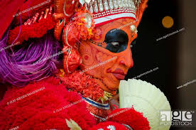

CULTURAL HERITAGE OF KASARAGOD
THEYYAM
The ritual art form of Theyyam is very popular in the northern districts of Kerala. This art form combines elements of dance, music and drama and is associated with the worship of ancestors and heroes.
The two popular sacred groves, where Theyyam is performed in Kasaragod district are Perumthitta Tharavad and Kanathoor Nalvar Bhoothasthanam. Perumthitta Tharavad is at Kottamkuzhi. The ten-day long festival here is marked by the performance of theyamms like Ilayur, Chamundi and several others.
For Theyyam lovers, Kanathoor Nalvar Bhoothasthanam offers a spectacle of 40 odd theyyams.
YAKSHAGANAM

Yakshagana is a traditional Indian theatre form, developed in Dakshina Kannada, Udupi, Uttara Kannada, Shimoga and western parts of Chikmagalur districts, in the state of Karnataka and in Kasaragod district in Kerala that combines dance, music, dialogue, costume, make-up, and stage techniques with a unique style and form. It is believed to have evolved from pre-classical music and theatre during the period of the Bhakti movement.[1] It is sometimes simply called "Aata" or āṭa (meaning "the play").[2] This theatre style is mainly found in coastal regions of Karnataka in various forms. Towards the south from Dakshina kannada to Kasaragod of Tulu Nadu region, the form of Yakshagana called as 'Thenku thittu' and towards north from Udupi upto Uttara Canara it's called 'Badaga Thittu'. Both of these forms equally played all over the region. Yakshagana is traditionally presented from dusk to dawn. Its stories are drawn from Ramayana, Mahabharata, Bhagavata and other epics from both Hindu and Jain and other ancient Indic traditions
KAMBALA,WATER BUFFALO
A traditional water buffalo race in muddy waters held from December to march in Kasaragod. It is the native sport of Tulu nadu. The 'track' used for Kambala is a paddy field filled with slush. Two pairs of buffaloes are the contestants and they are controlled by a whip-lashing farmer. In olden days, the winning pair of buffaloes was rewarded with coconuts and a bunch of plantains. Today Kambala has become an organized, professional sport which pulls a large crowd from different parts of the state. People place massive amounts of bets on the participating buffaloes and one can witness more than 20,000 spectators in a well organized Kambala, egging on and cheering the buffaloes to finish the race.